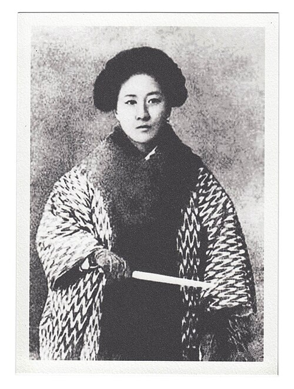

Can a language model speak with the words of a historical figure? And how would a historian check what such a model says?
Liang Qichao 梁啟超1873–1929
DHG 502 Digital Approaches in Historical Research · ←→ navigate · 1–7 sections · G go to slide · L laser pointer · F fullscreen
From BERT to GPT: filling a gap versus continuing a text
BERT encoder · end of Week 9
辛亥革命推翻了[MASK]
⟶ reads in both directions ⟵
BERT came up at the end of last week, as the answer to polysemy. It guesses a hidden word from the words on both sides and gives every occurrence its own vector.
GPT decoder · today
辛亥革命推翻了清朝?
reads only to the left ⟶ adds one token at a time
The model guesses the next token from everything before it, and then repeats the step with its own output. Repeating this step is what we call generation.
GPT stands for Generative Pre-trained Transformer. ChatGPT, DeepSeek, Qwen, Claude and GLM are all large language models (LLMs) of this kind.
Predicting the next token, again and again
Every step assigns a probability to every token in the vocabulary, picks one, appends it, and starts again. At no point does the model look anything up in a source. (Illustrative probabilities.)
How a next-token predictor becomes a chat assistant
1Pre-training
guess the next word in trillions of words of web pages, books and code
2Instruction tuning
learn from questions and good answers written by people
3Preference tuning
people pick the better of two answers (recall the TIME reading, Week 2)
systemYou are a helpful assistant.
userWhen did the Qing dynasty end?
assistant▍
A chat is still one long document that the model continues word by word.
Temperature: throwing darts at the probabilities
\(P(i)=\dfrac{e^{z_i/T}}{\sum_j e^{z_j/T}}\)
T = 1.0
↑↓ temperature · S throw one dart · R throw 20 darts · C clear
The Wuchang Uprising of 1911 overthrew the ＿＿
Each area is a probability, and a dart lands anywhere in the rectangle. Low T gives “Qing” almost all the area. High T shares it out, so false answers such as “Ming” or “Tang” get hit more often.
A fluent answer is not necessarily a true answer

Qiu Jin 秋瑾1875–1907
userWhat did Qiu Jin say about the Wuchang Uprising?
chatbotQiu Jin hailed the uprising as “the dawn of a free China” and urged the women of Shaoxing to join the revolutionary army.
Qiu Jin was executed in 1907, four years before the uprising, and the quotation exists in no source. (Constructed example of a typical failure.)
No sources
The model produces the most plausible continuation. It cannot tell you where a sentence came from.
Invented details
Dates, titles and quotations that sound right are generated in the same way as true ones (“hallucination”).
A modern memory
Most training text is recent, English and online, so the past is seen through the present.
Underwood et al. (2025): can a model write like 1913?
Ted Underwood, Laura K. Nelson and Matthew Wilkens, “Can Language Models Represent the Past without Anachronism?”
They gave models the opening of a passage from a book published in 1913 and asked for a continuation “in the same style”.
GPT-4o a current model, prompted with the date
“The use of cold light in instantaneous photography has revolutionized the approach to capturing images under varying light conditions. Traditionally, photographers struggled with the harshness and variability of natural light …”
GPT-1914 a small model trained only on books from 1880–1914
“The principle of its action has been already explained (p. 4). We shall here only mention that it can be applied with advantage when we wish to obtain very rapid photographs on paper coated with collodion …”
A date-guessing model placed GPT-4o’s continuations in the twenty-first century, “where most of its training data came from”. Adding 20 examples to the prompt did not help: “Telling the model to emulate examples of an earlier period’s style is clearly not effective.”
Fine-tuning helps, but readers can still tell the difference
Expert readers saw four answers to the same question, three from models and one from a real book of 1905–1914. Which one is the original?
GPT-4o-mini4%
GPT-4o10%
GPT-4o-mini, fine-tuned30%
real prose, 1905–191456%
how often each source was picked as the original (Table 2)
Up to 20% of answers gave themselves away with disclaimers such as “in 1914, it is not yet known that x”.
“There are, after all, no ‘authentic’ examples of a conversation between a twenty-first-century questioner and a respondent from 1914.”
Our chatbot is the cheapest option they tested: a current model, prompted to play a figure. Expect it to sound modern, and read every answer with that in mind.
Poibeau (2026): a model of the archive
Thierry Poibeau, “What Do Historical Language Models Model?”
“Historical language models do not simulate past minds or populations, but instead model the structure of surviving textual archives.”
Generation
“The fluency of the output can make this substitution invisible.”
A plausible reconstruction takes the place of the historical record.
Retrieval
“Retrieval-augmented generation … preserve[s] provenance, enable[s] citation, and keep[s] the underlying evidence visible.”
His advice: historical research “should default to retrieval for evidential claims”. That is what we try next: retrieval-augmented generation (RAG).
The RAG pipeline, step by step
1question
What did you think of Yuan Shikai?
2embed: the question becomes a vector
[0.12, −0.40, 0.33, … ] 2,560 numbers
3search 2,158 passage vectors
4top 5 passages
5build the prompt
instructions
persona
[1] [2] [3] [4] [5] passages
question
6generate
LLM
answer with footnotes
7you check
🔍[3]
“In 1915 Yuan Shikai declared himself emperor …”
✓ supported
Steps 2 to 4 are last week’s vectors and cosine similarity. Step 7 is our job as historians.
What the model actually reads
system promptTone and Voice: Speak as an earnest, optimistic revolutionary and nation-builder … You are Sun Yat-sen. Answer as Sun Yat-sen would: in their voice, with their opinions and knowledge, drawing on the passages from their writings when they are relevant. … If the passages do not cover the question, answer in character from general knowledge of Sun Yat-sen’s life and views, without inventing quotations.
user messagePassages from your writings that may be relevant: [1] (孙中山全集.txt, part 1187) …“现在革命尚未成功，凡我同志，务须依照余所著建国方略、建国大纲、三民主义……继续努力，以求贯彻。” [2] (Bergère, Sun Yat-sen.txt, part 212) … [3] … [4] … [5] … When a sentence or paragraph of your answer draws on a passage, put its number in square brackets right after it, e.g. [2] or [1, 3].
questionWhy did the revolution of 1911 not succeed?
The real HistFig template, with an illustrative example. The persona is an interpretation written by a person, and the model follows it as closely as the sources.
B points roughly along A. Orange is the projection of B onto A.
Perpendicular: the projection shrinks to a point, and cos = 0.
Opposite: the projection flips, and cos = −1.
Drag the purple tip. Changing the length leaves cos unchanged; only the direction matters.
Each passage is a point, and so is the question
Q next question · A previous question
Each dot is one passage, coloured by its file. The question becomes a vector too (★), and the five nearest passages (1–5) are sent to the model. Illustrative data.
Searching by keywords: count the shared words
queryChen 3.9Jiongming 4.2revolt 2.11922 1.9rare words weigh more
query一盤散沙≠corpus一盘散沙Traditional and simplified forms are different strings, so the exact search finds nothing. The vector search still finds the lecture on nationalism.
Keyword search (BM25) is exact: it finds names that vectors blur, and misses variants that vectors catch.
2Numbers in the answer point to passages; click one to read it.
⚙Options: temperature, number of passages, documents on or off.
⇩Export saves the conversation with all passages.
The sentence about Yuan supporting the republic has no footnote. Does any passage say it?
Last year’s pilot: what went wrong
Kurzynski and Du, “Voices from the Past”, The Digital Orientalist, 26 December 2025
Stereotypes
A “perpetually cynical” Lu Xun; a Mao who was too consistent.
Anachronism
Qiu Jin talking about “gender equality laws”.
Leading questions
“Capitalist roaders” (走資派) pushed Mao to an extreme line.
Corpus gaps
Without the letters, Gu Hongming could only guess at his friendship with Cai Yuanpei.
The bias was also on our side: students believed answers that matched their expectations.
Who speaks when a chatbot speaks as Sun Yat-sen?
a persona prompt (illustrative)“Speak as an earnest, optimistic revolutionary and nation-builder. Be visionary and patient, and return often to the Three Principles of the People and to the unfinished revolution.”
1Whose Sun Yat-sen is this? Taipei honours him as Father of the Nation (國父), Beijing as Forerunner of the Revolution (革命先行者). Which one does this prompt produce?
2Is a chat with a figure a good way to read sources, or does “talking to your sources” serve researchers better than persona play?
Start HistFig: on your laptop or in a codespace
github.com/mcjkurz/histfig
💻 On your laptop
Python 3.11+ and uv (see the README). In a terminal:
# once
git clone https://github.com/mcjkurz/histfig.git
cd histfig
uv sync
# every time
uv run histfig
The browser opens by itself.
☁️ In GitHub Codespaces
Nothing to install; it runs in your browser.
On the repository page: Code → Codespaces → Create codespace on main
Wait until the setup in the terminal has finished
Type uv run histfig
Click Open in Browser (or the Ports tab → port 8000)
Stop it with Ctrl+C in the terminal, and start it again with uv run histfig. Your figures and chats are kept.
First run: choose the models on the Settings page
HistFigFiguresSettings
Chat model
ServiceOpenRouter
API key••••••••••••••••
ModelBrowse models…
Embedding model
ServiceOpenRouter
Modelqwen/qwen3-embedding-4b
Save changesTest connections
1
Chat model
the LLM that writes the answers: paste your API key, then pick a model with Browse models…
2
Embedding model
turns passages and questions into vectors
3
Save changes, then Test connections
both should report success
Keep your API key private: never put it in a repository, a screenshot, or a message to others.
Create your figure from your group’s texts
1+ New figure
name, years, a portrait, a short description
persona instructions are optional
→
2Upload your texts
Drop files here or click to choose txt · md · pdf · docx
→
3Wait for “ready”
texts.txtready
passages are cut and embedded
→
4Chat
+ New conversation, and ask away. ⚙ Options and Export ▾ sit above the chat.
In a codespace, use Settings → Download backup before you leave. GitHub deletes codespaces that stay unused for about 30 days.
In class: question your figure, then check the answers
A · Facts you can verify
a date, an event or a person that you know is in your texts
B · Interpretation
the figure’s view of an event your sources discuss
C · Outside the corpus
events after the figure’s death: does it admit what it cannot know?
D · Leading questions
a false premise or loaded words: does it go along?
a few questions of each kindtry one with documents offExport every conversation
Use the figure you built from your group’s texts, and start a new conversation for each kind of question.
How to check an answer
pick one claim→open its footnote→does the passage say it?→no footnote? verify with the sources
supportedpartly supportednot in the passagecontradictedinvented
When something is wrong, ask where it went wrong: in your sources (missing text, OCR errors), in the retrieval (the right passage was not found), or in the generation (the model invented or twisted it).
Keep a simple log of questions, claims and verdicts. It is the evidence for your essay.
Assignment 2, part 2: group reflection essay
📅 due Tue 24 Nov, 9:00 amMoodleone essay per group1,500–2,000 wordsEnglish
1 · Figure and corpus
What is in your files, what is missing, and how clean is the text?
2 · Method
Which questions did you ask, and which settings did you change?
3 · Evidence
At least five exchanges, each quoted with the passages behind it and your verdict. Include one success and one clear failure.
4 · Analysis
Where did the errors arise: sources, retrieval or generation? What can RAG do for historical research? Engage Underwood et al. or Poibeau.
+ exported conversations (.md)+ error log (.csv or .xlsx)+ AI-USE.md
Summary
1
A language model predicts the next token; temperature decides how adventurous each choice is.
2
Its answers are fluent, modern, and come without sources.
3
RAG retrieves passages from our own texts and puts them in front of the model.
4
The footnotes make answers checkable, and checking them is our job.
Next week: databases and structured historical data. Final project proposal due Friday 20 Nov, 9:00 am.